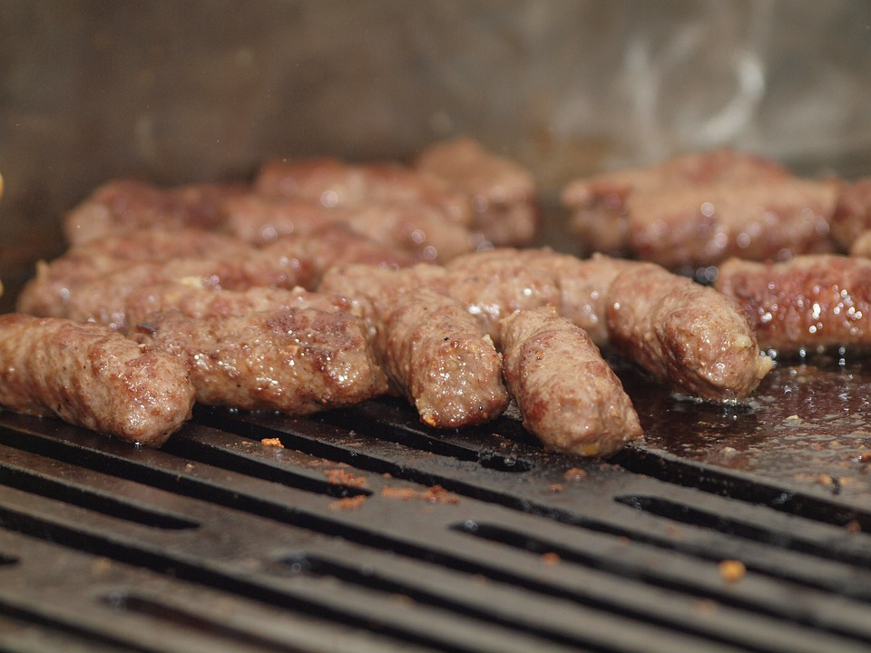
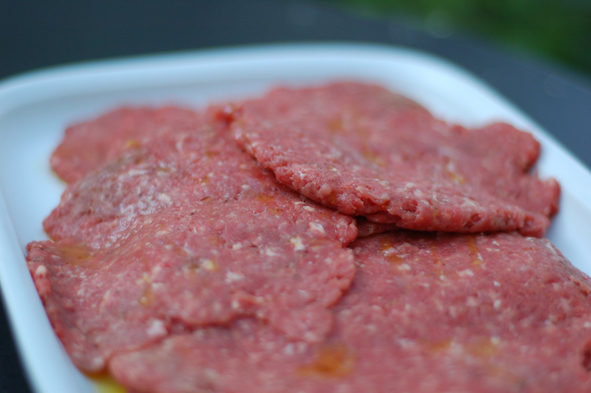
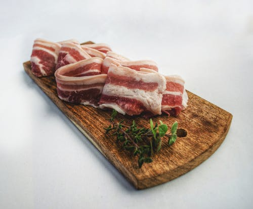

Ćevapčići
Ćevapčići napravljeni od domaćeg mljevenog mesnica s dodanim biljnim začinima bez umjetnih boja i pojačivača okusa. Domaća originalna receptura.
Pljeskavica
Pljeskavica napravljena po domaćoj recepturi daje izvrstan okus za svačije nepce. U ponudi imamo obične i punjene pljeskavice.
Slanina
Suhomesnati proizvod od dimljenog i usoljenog svinjskog mesa. Sušeno na drvetu smreke na dalmatinskoj buri sa planine Promine.
Šunka

Domaća dimljena šunka, tradicija izrade i punina okusa.
Kobasice
Tradicionalna obiteljska receptura domaće kobasice koja sadržava čiste i najbiranije komade mesa koristeći savršen omjer svih začina. Sušena na buri, okusa koji budi sva osjetila topeći se na Vašem jeziku.